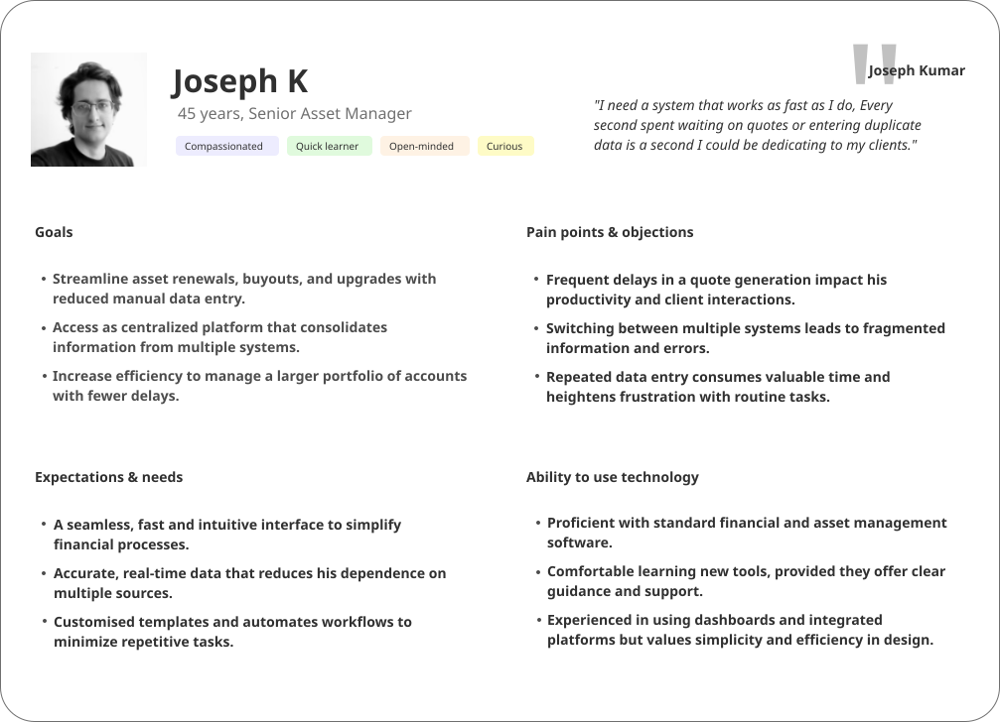
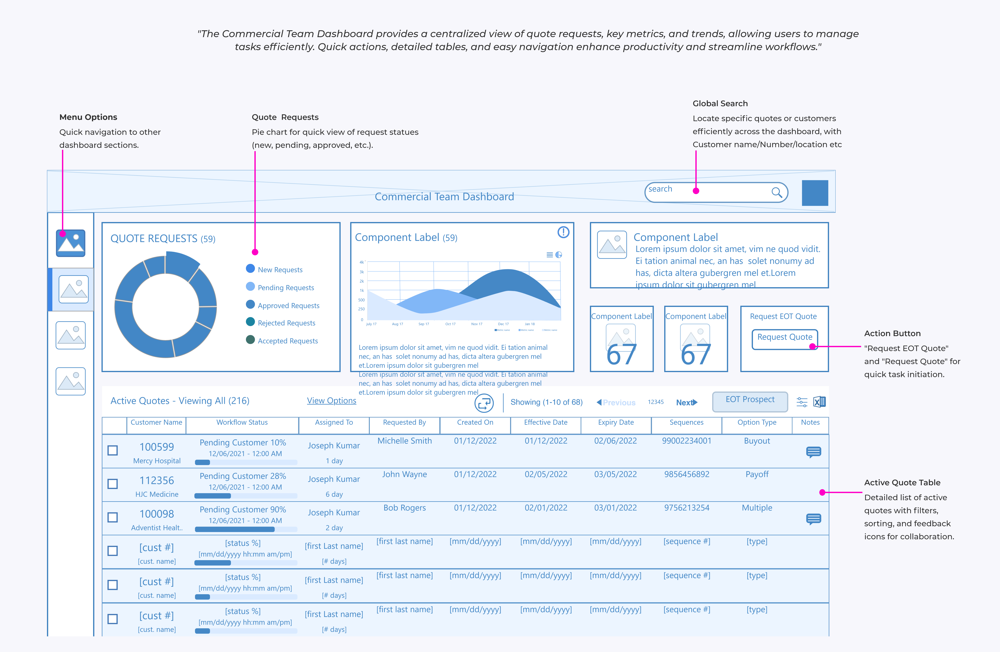

About the project
GE HealthCare’s commercial teams managed quotes, renewals, upgrades and asset requests across fragmented internal systems. Manual work, duplicated data and disconnected workflows slowed decisions down and added operational overhead. My goal was a centralized platform that streamlined these processes while giving users more autonomy.
- Problem. Teams relied on manual data entry across disconnected systems for quote generation, asset requests, renewals and upgrades, with no unified source of truth. Users were frustrated by low productivity and a lack of integration.
- Solution. I led the redesign of quote generation and asset management: the information architecture, the dashboard and validation through usability testing. I also contributed hands-on Angular front-end work to close the gap between design and build.
- Impact. Faster quote preparation, fewer manual approvals, centralized data, role-based workflows and higher adoption.
I worked inside a cross-functional team of 2 technical architects, 4 full-stack developers, 4 Angular UI developers, 2 .NET developers, 5 QA engineers, 1 cloud/DevOps engineer, 3 UX/UI designers and 2 support analysts.
This is real work on GE HealthCare’s live platform: the screens, workflows and approach are the genuine story. Because it’s an active enterprise engagement, customer names and figures shown are demo or anonymized data, and business metrics are kept approximate per the NDA.
Research
Teams were managing fragmented, dispersed systems for quotes, renewals and vouchers, with no unified source of truth.
Research combined stakeholder workshops with financial services teams and usability sessions with end users on wireframes and prototypes. The problem came into focus quickly:
- Financial services workflows needed a centralized platform to address inefficiency and fragmentation.
- Users relied on manual data entry and disconnected systems for quotes, renewals and upgrades.
- Managers needed to raise and track requests independently, without relying on other teams.
- Users voiced frustration with low productivity and the overall lack of integration.
Meet Joseph


What Joseph’s goals implied for the design:
- Efficiency is key. Streamlined processes that cut redundant tasks free him to focus on client relationships.
- Centralization is essential. Fragmented workflows disrupt his day; one platform removes the back-and-forth.
- Reliability and simplicity. Intuitive, dependable tools with a minimal learning curve.
- Time-sensitive information matters. Quote preparation depends on fast, real-time data, filters and interactions.
Key findings
- High demand for efficiency. Reducing manual tasks directly lifts productivity and satisfaction.
- Data needs to live in one place. Fragmentation across systems causes inefficiency; users did noticeably better with minimal, well-organized navigation.
- Preference for intuitive tools. Users want no-nonsense systems that need little training and match their mental model of the workflow.
- Speed matters. Real-time processing in quote preparation cuts dead time and the errors caused by manual re-entry.
A centralized, role-based platform
I led the redesign end to end: the information architecture, the dashboard and quote workflows, and validation through usability testing. The platform automates repetitive tasks and consolidates data into one interface. Role-based access lets users manage their own quote requests without waiting on other teams.
I also contributed hands-on Angular front-end development, working closely with engineering to keep the build faithful to the design intent.
Before
- Fragmented systems
- Manual data entry
- Duplicated records
- No shared visibility
After
- Centralized platform
- Role-based access
- Automated workflows
- Single source of truth
Rapid wireframes to lock the structure first


- Menu options for quick navigation across action items.
- Quote request flow for raising quote generation requests.
- Actionable alerts surfaced directly on the dashboard.
- Active and inactive quotes, all visible at a glance.
Usability testing shaped the key changes
I planned and ran usability sessions on the first wireframes, covering core tasks like raising a quote request, searching and filtering active quotes, and reading status updates.
The feedback led to streamlined navigation, color-coded status indicators, better search and quick action buttons: changes that improved accessibility and cut task-completion time across the final dashboard.


- Quick summary panel: key totals visible without drilling in.
- Top navigation tabs: faster switching between core workflows.
- Advanced search: instant lookup with saved filters.
- Color-coded status: readable at a glance.
- Notifications and alerts: actionable items surfaced proactively.
- Quick table view: dense data kept scannable.
Finally, responsive for tablets and mobile
Asset managers needed to check quote status and act on alerts wherever they were, not only at a desk, which matched Joseph’s goal of managing a larger portfolio without being tied to one device.

Aligning with the Ethos Design System
Modernizing the platform to match GE HealthCare’s new design language.
When GE HealthCare introduced the Ethos Design System after its brand evolution, one of my key responsibilities was bringing the financing platform in line with it. Beyond migrating legacy workflows, I contributed reusable components that improved consistency across enterprise applications.
My contribution
- Migrated multiple enterprise workflows to the Ethos Design System.
- Redesigned legacy screens with standardized layouts, typography, spacing and interaction patterns.
- Designed reusable components: accordion, dropdown, filter, navigation and modal patterns.
- Worked with product managers, business analysts and Angular developers on accurate implementation.
- Ran design QA to keep the application consistent.
Design decisions
Instead of custom UI for every workflow, I prioritized reusable patterns that reduced cognitive load in complex financial processes. Where requirements went beyond existing components, I designed scalable patterns that stayed aligned with Ethos while meeting product-specific needs.
The callouts: standardized spacing, updated typography, a reusable filter pattern, a clearer navigation hierarchy and accessible interaction states. Together they gave design and engineering a shared language and made future changes simpler.
Outcome
- The application now aligns with the Ethos Design System.
- Reusable enterprise components were adopted across workflows.
- Consistency improved across multiple business modules.
- Design and engineering collaborate faster.
Constraints & iteration: the workflow status view
Not every redesign is a single decision. Some are a back-and-forth.
As the platform scaled, the original quote-status view (a simple pie chart) stopped giving the PMO team enough detail to act quickly. Each stakeholder review surfaced a new requirement, and each carried its own technical implications.
| Shift | Why |
|---|---|
| Pie chart → bar graph | The PMO wanted every workflow’s status at a glance, not a proportional breakdown. |
| Bar graph → progress view | Bars needed scrolling once volume grew, which the PMO explicitly didn’t want. |
| Progress view → card view | They needed status by individual workflow step, which meant restructuring the data model, not just the visuals. |
| Card view → live updates | Real-time status brought a real constraint: refresh performance and backend load. |
How I handled it
Rather than restarting each time, I kept the underlying data structure (workflow status by step) consistent, so each visual pivot was a presentation change, not a rebuild. That’s what let the design keep pace with requirements shifting meeting to meeting. For live updates, I worked with engineering to find a refresh rate that was sustainable at scale, instead of designing an ideal real-time view the backend couldn’t support.
The final card view with live status gave the PMO what they’d asked for in every round: at-a-glance visibility into individual steps, no scroll dependency, updated in real time.
What I’d do differently
Push for a structured requirements session upfront. Even one round of “show me three rough directions before we build any” would likely have surfaced the scroll and step-level needs earlier. Fast iteration is valuable, but it doesn’t replace front-loaded discovery while the stakeholder’s own mental model is still evolving.
Impact
Notable gains in satisfaction, efficiency and productivity.
- Quotes generated through the platform
- 5,000+
- Vouchers processed
- 7,000+
- Value processed
- ~$21M
- Invoice cancellations handled
- 2,000+
- Asset management requests
- 600+
- Business. Adoption scaled across several teams as the platform absorbed work that used to run through disconnected tools.
- Users. More autonomy, much shorter quote preparation, and better satisfaction with a seamless experience across devices.
- Operations. More quotes processed and less manual work, because users manage their own requests.
“This has completely streamlined my daily tasks. What used to take hours now only takes a few minutes, letting me focus more on client management.”
“I now have full autonomy to raise and track quote requests without relying on others. It’s a real change for efficiency and team productivity.”
“The platform’s responsiveness on mobile means I can manage tasks anytime, anywhere. It’s boosted my productivity and cut delays in our workflow.”
Quoted by role rather than name, since I don’t have explicit consent to name the reviewers publicly.
What I took away
- Design for systems, not just screens. Removing one step for users often meant coordinating changes across several backend systems and stakeholders.
- Test early and lightly. Quick usability rounds found real problems before they became expensive.
- Performance is part of the experience. Faster processing directly improved efficiency and satisfaction.
- Role-based access empowers people. Managing their own requests gave users autonomy and sped everything up.
Since the first redesign I’ve kept leading design on the account, extending the design system to new modules and views under the platform’s evolving guidelines.
Exact financial figures and some internal tooling details stay approximate per the NDA. Happy to go deeper in conversation: ask me about this project.